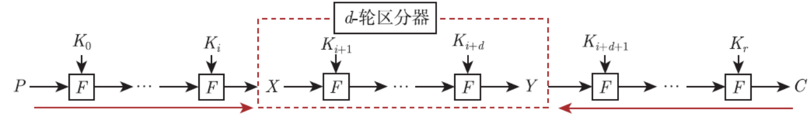
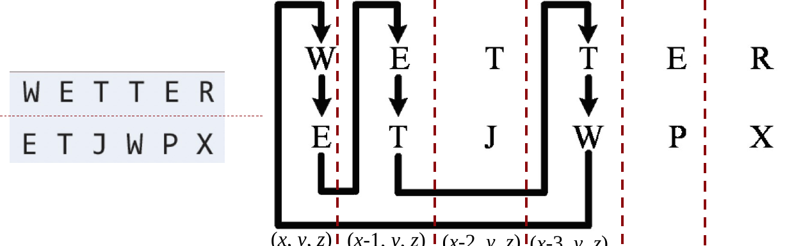
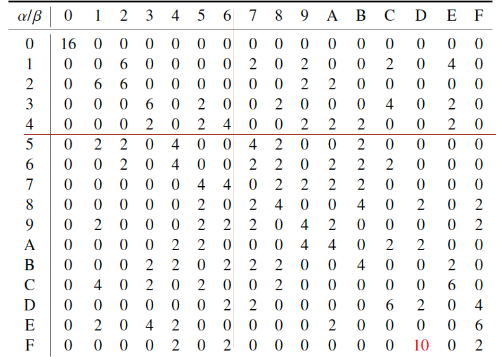
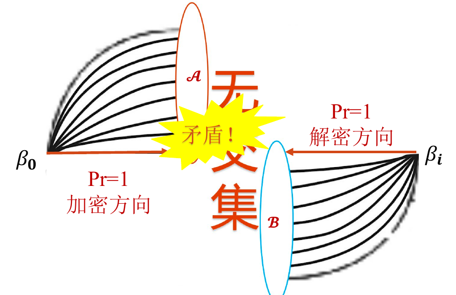
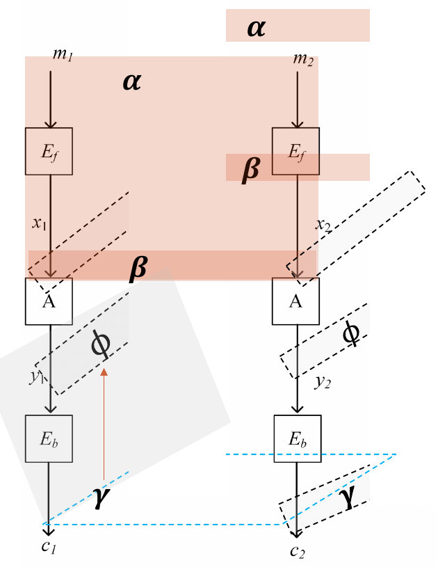
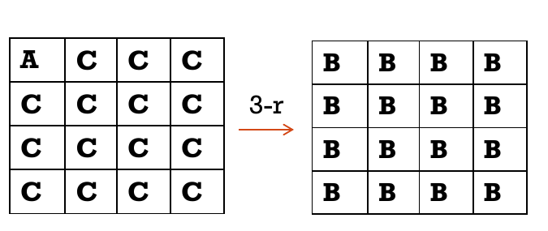
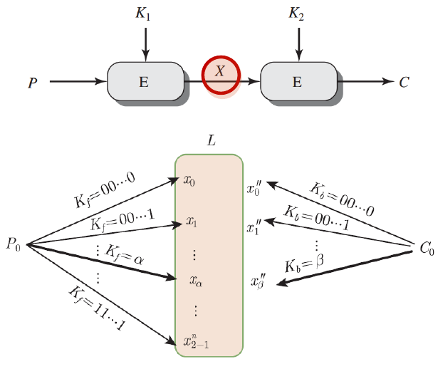
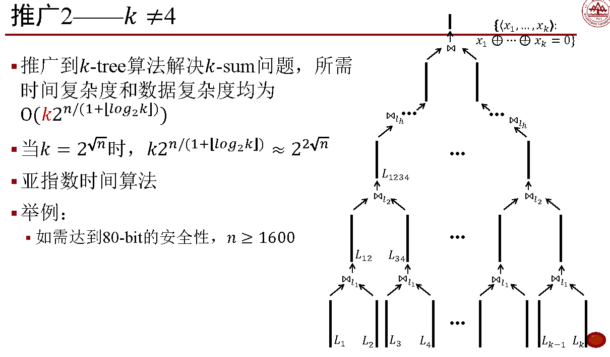
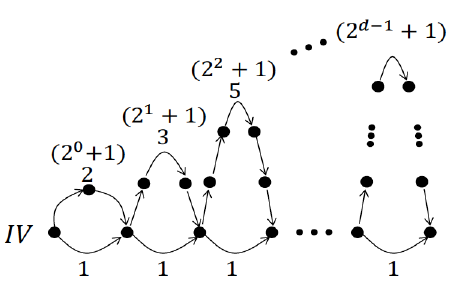
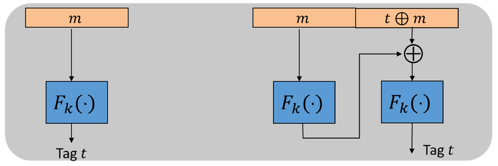

密码分析学期末复习总笔记¶
来源：
密码分析学 / review/密码分析学期末复习总笔记.md
适用考试：2026 年 11 月 18 日期末闭卷笔试。按教学大纲的八章内容整理，重点掌握攻击利用什么性质、怎样判断密钥、概率怎样计算、复杂度与什么比较。
大纲第 18 页的拟定分值如下。
| 章节 | 拟定分值 | 必须能独立写出的内容 |
|---|---|---|
| 一 基本概念与模型 | 5 | 攻击模型、区分器、密钥恢复、复杂度 |
| 二 Enigma | 5 | 密钥空间、不能自加密、crib 与环路 |
| 三 差分类 | 25 | DDT、路线概率、计数与排除、四元组 |
| 四 线性类 | 25 | LAT、掩码、偏差、算法 1／2、差分—线性 |
| 五 积分 | 10 | A／C／B 传播、AES 三轮平衡、末轮恢复 |
| 六 中间相遇 | 15 | 相遇方程、独立枚举、候选数量与资源 |
| 七 杂凑 | 10 | 生日与 4-tree、第二原像、MD4 消息修改 |
| 八 MAC | 5 | 三种伪造目标、长度扩展与 CBC-MAC 伪造 |
差分、线性、积分、中间相遇合计占拟定分值的 75%。文末另有自动化建模要点、易错对照和公式速查。相关密钥攻击未单列考试分值，作为八章主线之后的拓展内容。
一 基本概念与攻击模型¶
1 算法公开 密钥保密¶
Kerckhoffs 原则： 假设攻击者知道算法与公开参数，安全性应依赖密钥保密。轮间独立性和错误密钥随机性在相应复杂度推导中另行设定。
| 攻击模型 | 攻击者能获得什么 |
|---|---|
| 唯密文 | 密文 |
| 已知明文 | 已有的明文及对应密文 |
| 选择明文 | 自选明文并查询加密结果 |
| 选择密文 | 自选密文并查询解密结果 |
| 选择文本 | 同时具有选择明文和选择密文能力 |
“自适应”指后续查询可依赖此前的回答。普通差分通常使用选择明文，线性分析通常使用已知明文，经典飞去来器需要选择明文和自适应选择密文；增强飞去来器可只使用选择明文。
2 区分器怎样变成密钥恢复¶
区分器检测具体算法与随机置换的行为差别；密钥恢复求出部分或全部密钥。
常见做法：先找中间若干轮的性质，再猜首尾少量子密钥，部分加解密到区分器的边界，依据统计或矛盾筛选候选，最后验证完整密钥。

图源：第 1 章课件第 36 页。图中的区分器只覆盖算法的一部分。
三类典型判据要分清：高概率差分是“命中加分”，不可能差分是“触发禁忌则删除”，线性分析是“与一半相比有偏差”。它们可能都要猜末轮密钥，但判断方向不同。
3 复杂度必须统一对象和单位¶
每个攻击都要交代 数据量 \(D\)、时间 \(T\)、存储 \(M\)、成功率 \(P_s\)。时间要注明是 S 盒运算、轮函数计算还是完整加密；数据要注明明文条数、明文对数还是四元组数。
设完整密钥长为 \(K\) 比特，分组长为 \(n\) 比特。直接穷举量级为 \(2^K\) 次完整加密；若找到正确密钥即停止且位置均匀，平均约 \(2^{K-1}\) 次。比较攻击时应采用同一约定。
在理想随机密钥模型下，一个错误密钥匹配一组明密文的概率约为 \(2^{-n}\)。匹配 \(r\) 组不同输入的明密文后，错误候选期望约为
匹配第一组后，再通过第二组的条件概率约为 \(2^{-n}\)；从头看同时匹配两组的联合概率约为 \(2^{-2n}\)。
例： \(K=80,n=64\)，一组数据后约剩 \(2^{16}\) 个错误候选，两组后约剩 \(2^{-48}\) 个。这里统计的是错误候选数的期望。
比较“某攻击是否比穷举快”时，先问：它恢复的是完整 \(K\) 比特密钥，还是只恢复末轮的 \(k\) 比特子密钥？还要把剩余密钥的恢复、数据准备与候选验证计入总成本。
二 Enigma 机的破解¶
1 结构和两个可利用性质¶
信号经过“接线板 → 转子组 → 反射器 → 逆向转子组 → 接线板”。令接线板为 \(S\)，位置 \(t\) 的转子组为 \(R_t\)，反射器为 \(T\)，则
反射器满足 \(T^{-1}=T\) 且无不动点，因此相同机器设置下加解密过程相同，并且任何字母都不会加密为自身。转子随输入步进，所以不能把整段消息当成一个固定单表替换。
2 密钥空间计算¶
- 从 \(r\) 个不同转子中选 \(s\) 个并排序：\(r!/(r-s)!\)。
- 每个转子有 26 个初始位置：\(26^s\)。
- 26 个字母中接 \(\ell\) 对接线：\(26!/((26-2\ell)!\,2^\ell\ell!)\)。
环设置、反射器等参数按题目给定的范围计数。
例： 5 选 3 并排序，只计初始位置，忽略环设置与接线板：
3 Crib 与环路如何减少搜索¶
Crib 是猜测的明文片段及其与密文的对齐位置。有位置出现明密文字母相同，就直接排除该对齐；其余对齐继续进行环路检验。
把 crib 的字母关系连成环路。设去掉接线板后的机器为 \(A_t=R_t^{-1}TR_t\)，则 \(E_t=S^{-1}A_tS\)。若环路经位置 \(t_1,\ldots,t_j\) 从字母 \(a\) 回到 \(a\)，就要求
所以可以先枚举转子设置，检查组合置换是否有相容的不动点；再据此求接线板，并检查接线冲突。环路中间的接线板因素相消，使联合搜索拆成转子筛选与接线板求解。

图源：第 2 章课件第 29 页。环路还需与其他字母关系一起验证。
简答可写成：猜测 crib → 排除自加密位置 → 构造环路 → 筛转子设置 → 求接线板 → 完整验证。
详见：破解 Enigma 机。
三 差分类攻击¶
1 普通差分：寻找偏多的差分，给密钥计数¶
攻击对象是一对文本的差，核心判据是“某个差分出现得比随机情况更频繁”。 通常使用选择明文：取 \(P'=P\oplus\alpha\)，观察经过若干轮后的差分是否为 \(\beta\)。
对随机 \(n\) 比特置换、固定非零 \(\alpha,\beta\)，平均基准为 \(1/(2^n-1)\approx2^{-n}\)。这是完整输出差分的基准；若只检查部分比特，要按实际约束重新计算。
三种部件的传播必须会写：
- 相同密钥异或会抵消：\((x\oplus k)\oplus(x'\oplus k)=x\oplus x'\)。
- 线性层 \(y=Lx\) 精确传播差分：\(\Delta y=L\Delta x\)。它保持线性关系，不一定保持差分值不变。
- S 盒的传播由差分分布表 DDT 决定。对 \(m\) 比特输入，
每行和为 \(2^m\)；\(a=0\) 时仅 \(b=0\) 的计数为 \(2^m\)；对非零 \(a\)，解按 \(x,x\oplus a\) 配对，因此计数为偶数。双射 S 盒的非零输入差分不可能产生零输出差分。

图源：第 3.1 节《差分分析-1》，第 30 页。表中是计数，除以 16 才是概率。
手算例： 课件中 \(\operatorname{DDT}[\texttt{2},\texttt{2}]=6\)，故概率为 \(6/16\)。考试给出 S 盒时，枚举所有 \(x\)，计算 \(S(x)\oplus S(x\oplus a)\) 并计数；不能照抄另一个 S 盒的表。
2 差分路线与差分的区别¶
差分路线固定每一轮边界的差分；差分只固定头尾，允许经过不同中间状态差分。
- 单条路线：在轮密钥独立的乘积模型下，用各活跃 S 盒传播概率相乘估计。
- 相同头尾的差分：不同中间差分序列对应互斥事件，应将各路线的真实概率相加。
CipherFour 课件给出四条同头尾路线，每条近似概率为 \((6/16)^4\)，故这些路线的合计贡献约为
“沿一条路线相乘，同头尾不同路线相加”是计算题的关键。活跃 S 盒指输入差分非零的 S 盒；若每个活跃 S 盒的概率至多为 \(p_{\max}\)，含 \(a\) 个活跃 S 盒的路线在乘积模型下至多为 \(p_{\max}^{a}\)。
3 如何从区分器恢复密钥¶
将算法拆成“\(r\) 轮高概率差分 + 末轮”，写出五步即可形成完整答案：
- 采样： 收集输入差分为 \(\alpha\) 的明文对及其密文。
- 预筛： 利用末轮传播的必要条件，丢弃肯定不可能满足目标差分的数据对。
- 猜测： 枚举影响目标位置的末轮子密钥，部分解密密文。
- 计数： 若还原后的差分为 \(\beta\)，给该候选加一；统计全部数据后排序。
- 验证： 用额外明密文检验高分候选，继续恢复剩余密钥。
CipherFour 的末轮半字节检验形如
正确对是命中内部目标差分的文本对；正确密钥是实际使用的密钥。统计攻击通过大量文本对的命中次数区分候选。
普通差分里，命中一次只增加证据，未命中一次不能删除密钥。错误候选通常接近随机基准，正确候选预期具有更多命中。
若采样 \(N\) 对，目标差分概率 \(p\)，预筛保留比例 \(\rho\)，每个保留对平均给 \(\eta\) 个候选加分，猜测 \(k\) 比特，则课件的信噪比近似为
例如 \(p\approx0.08,\rho\approx0.11,\eta\approx4,k=4\)，得到约 \(2.9\)。该比值衡量信号相对平均噪声的强弱。数据量按目标成功率选取，使预期正确对数 \(Np\) 足以支持候选排序。
4 截断差分：只规定一部分差分信息¶
截断差分研究一个差分集合。例如 \(*0**\) 只规定第二位为零，其他位任意，代表八个具体差分。若星号定义为“任意值”，它包含零；若题目另用活跃符号表示“非零”，必须区分。
课件中输入差分 \(\texttt{2}\) 经 S 盒只能输出 \(\texttt{1},\texttt{2},\texttt{9},\texttt{A}\)，这些值有共同的零比特，可以合并成一个截断模式。完整差分各自概率可能不高，共同模式的概率却可能为 \(1\)。经过下一轮时，先传播兼容的具体差分，再提取共同约束。
明文结构体用较少查询制造大量数据对：固定其他位置，让一个 \(m\) 比特位置遍历 \(2^m\) 个值，可形成
个无序对。例如活跃一个半字节产生 16 个明文、120 个对。这些对可共享明文，差分值随配对而变化。
恢复密钥时可在区分器首尾扩轮，猜首轮密钥筛出满足输入要求的对，再猜末轮密钥检验输出模式。若区分器是概率 \(1\) 的必要条件，违反它可以排除候选；若只是较高概率事件，则仍应统计。因此“截断”描述约束是否完整，不决定必须计数还是删除。
5 不可能差分：触发禁忌就删除密钥¶
不可能差分满足 \(\Pr[\alpha\to\beta]=0\)。最典型的构造是中间相错：输入正向必然到达集合 \(\mathcal A\)，输出反向必然到达集合 \(\mathcal B\)，在同一轮边界证明

图源：《不可能差分分析》，第 14 页。两个方向都要使用必然成立的传播约束。
恢复步骤：扩展首尾轮 → 收集并过滤数据对 → 猜测边界子密钥 → 部分加解密 → 若得到被禁止的内部差分，则删除该候选。其余候选继续接受后续数据对的检验。
Feistel 左右顺序易错点。 若一轮定义为
且 \(F_i\) 为双射，则课件五轮结论在轮内顺序下是
正向两轮得到 \((\alpha,\beta)\)，\(\beta\ne0\)；假设末端为 \((0,\alpha)\)，反向三轮得到 \((\alpha\oplus\delta,\gamma)\)，\(\delta\ne0\)，左半支矛盾。若末端额外交换后再记为密文，同一结论写成 \((\alpha,0)\not\to(\alpha,0)\)。先标明轮内顺序、末尾交换及逆函数返回顺序，再判断截图中的 \((0,\alpha)\) 是否写反。
六轮例子的密文采用 \(C=(R_6,L_6)\) 时，逆去末轮所得轮内状态为
因此预筛 \(\Delta C^R=\alpha\) 后，若 \(F_\kappa(C_i^R)\oplus F_\kappa(C_j^R)=\Delta C^L\)，恰好得到禁忌 \((0,\alpha)\)，应删除 \(\kappa\)。
复杂度计算。 课件六轮例子设分组长 \(b\)、末轮子密钥长 \(k\)，每个结构体约有 \(2^{b/2}\) 个明文，过滤后约 \(2^{b/2-1}\) 对。独立近似下，一个结构体使错误候选留存比例约为 \(e^{-1/2}\)；\(s\) 个结构体后约剩 \((2^k-1)e^{-s/2}\) 个。候选虽然递减，仍要遍历最初的 \(2^k\) 个候选并处理数据对，课件模型约需 \(2^{k+b/2+1.34}\) 次轮函数运算，若六次轮函数计作一次完整六轮加密，约为 \(2^{k+b/2-1.24}\) 次完整加密。几何级数只改变常数因子，没有消除对 \(k\) 的指数增长。这里 \(k\) 是末轮子密钥长度，\(K\) 才是完整密钥长度：若两者相同，直接穷举往往更便宜；若只恢复局部子密钥，应计入剩余密钥恢复成本后与 \(2^K\) 比较。
6 飞去来器 增强飞去来器和矩形¶
把密码拆成两段：上段有 \(\alpha\to\beta\)、概率 \(p\)；下段有 \(\phi\to\gamma\)、概率 \(q\)。将连接线性层并入其中一段后，若 \(\beta\ne\phi\)，不能沿同一对文本直接串接；若把线性层 \(A\) 单列，则串接条件是 \(A\beta=\phi\)。飞去来器用四个文本，让上段差分对应横边、下段对应竖边，在中间建立平行四边形关系。

图源：第 3.3 节《飞去来器攻击和矩形攻击》，第 6 页。线性或仿射连接层保持“四个状态异或为零”的关系。
经典飞去来器： 选择 \(P_1,P_2\) 使差分为 \(\alpha\)，取得 \(C_1,C_2\)；主动构造 \(C_3=C_1\oplus\gamma,C_4=C_2\oplus\gamma\) 并查询解密；检查 \(P_3\oplus P_4=\alpha\)。它需要选择明文和选择密文能力。在两段差分适用且相关性可忽略的课件模型下，两次上段、两次下段的成功贡献约为 \(p^2q^2\)。
增强飞去来器： 只选两对输入差分均为 \(\alpha\) 的明文，观察密文侧两个跨对差分是否均为 \(\gamma\)。由于无法主动构造密文，中间跨对差分还要偶然对齐，多出约 \(2^{-n}\) 的代价。
下表取非零 \(\alpha,\gamma\)，只统计非退化四元组。经典版排除 \(C_1\oplus C_2=\gamma\) 的情形，否则只是把原密文对交换后解密，会自动成功；增强版要求四个明文互不相同。
| 对一个候选四元组的模型 | 经典飞去来器 | 增强飞去来器 |
|---|---|---|
| 具体密码成功概率近似 | \(p^2q^2\) | \(2^{-n}p^2q^2\) |
| 随机置换基准近似 | \(2^{-n}\) | \(2^{-2n}\) |
| 相对随机基准的概率比 | \(2^np^2q^2\) | \(2^np^2q^2\) |
| 查询能力 | 选择明文与选择密文 | 选择明文 |
“增强”体现在候选四元组数的平方增长和选择明文模型。准备 \(N\) 个明文对，可以配出约 \(\binom N2\) 个候选四元组，期望成功数约为 \(\binom N2 2^{-n}p^2q^2\)。大量候选积累出可检测的统计信号。
矩形攻击进一步汇总相容的中间差分。常见独立近似下，令 \(p_\beta=\Pr[\alpha\to\beta]\)、\(q_\phi=\Pr[\phi\to\gamma]\)，用 \(\widehat p^{\,2}=\sum_\beta p_\beta^2\)、\(\widehat q^{\,2}=\sum_\phi q_\phi^2\) 汇总贡献，形式类似 \(2^{-n}\widehat p^{\,2}\widehat q^{\,2}\)。计算时先将同头尾路线合成差分概率，再对相容中间差分的概率分别平方求和；沿用前述独立近似。
四 线性类攻击¶
1 掩码 偏差 相关度和 LAT¶
线性分析研究比特的异或和是否有偏差，通常使用已知明文。掩码 \(a\) 指出选择哪些比特，内积定义为 \(a\cdot x=\bigoplus_i a_ix_i\)。例如 \(a=101\) 表示取 \(x_1\oplus x_3\)。
对 S 盒研究 \(a\cdot x\oplus b\cdot S(x)=0\)，设成立输入数为 \(N_0\)，输入宽度为 \(m\)，则
本笔记采用中心化 LAT：
有的材料把 \(N_0\)、Walsh 值 \(2N_0-2^m\) 或相关度也称作 LAT；先看定义再换算。例如 4 比特 S 盒有 12 个输入满足等式，则 \(p=3/4,\varepsilon=1/4,c=1/2\)，此处 LAT 项为 4，Walsh 值为 8。负偏差同样有用，只是等式更倾向不成立。
双射 S 盒中，非零单侧掩码的线性比特均匀，故 \(\operatorname{LAT}[a,0]=\operatorname{LAT}[0,b]=0\)（\(a,b\ne0\)）；\((0,0)\) 是恒真式，没有攻击价值。若输入输出等宽且 \(m\ge2\)，此定义下 LAT 项为偶数。
2 掩码传播不能照抄差分传播¶
若 \(y=Lx\)，有
差分沿数据方向用 \(L\) 传播；掩码的相容条件用转置 \(L^{\mathsf T}\)。密钥异或满足 \(b\cdot(x\oplus k)=b\cdot x\oplus b\cdot k\)，引入固定密钥奇偶项，不改变偏差绝对值。

图源：第 4.1 节《线性分析》，第 54 页。
- 异或结点 \(y=x_1\oplus x_2\)：输出掩码 \(b\) 分别传给两个输入。
- 复制结点 \(x\mapsto(x,x)\)：两个输出掩码 \(b_1,b_2\) 在输入合并为 \(b_1\oplus b_2\)。
- S 盒：选择 LAT 非零的掩码对，并使相邻部件的中间掩码抵消。
3 堆积引理与线性包¶
对相互独立的二值误差 \(Z_i\)，设 \(\Pr[Z_i=0]=1/2+\varepsilon_i\)，则
手算例： 两个独立近似的偏差都为 \(1/4\)，异或后偏差为 \(2(1/4)^2=1/8\)，等式成立概率为 \(5/8\)。若其中一个偏差为 \(-1/4\)，结果为 \(-1/8\)，概率为 \(3/8\)。异或后的偏差用堆积引理计算。
一条线性路线固定各层掩码；同头尾的所有路线构成线性包。路线贡献具有符号，固定密钥下整体相关度是各路线带符号贡献之和，可能相互增强或抵消；求和时保留每条路线的符号。
4 Matsui 算法 1：判断密钥奇偶位¶
设线性近似为 \(a\cdot P\oplus b\cdot C=\theta(K)\)，以概率 \(p=1/2+\varepsilon\) 成立。统计 \(N\) 组明密文中左侧为零的次数 \(T\)：
| 已知偏差符号 | \(T>N/2\) | \(T<N/2\) |
|---|---|---|
| \(\varepsilon>0\) | 猜 \(\theta=0\) | 猜 \(\theta=1\) |
| \(\varepsilon<0\) | 猜 \(\theta=1\) | 猜 \(\theta=0\) |
统一记法：\((T-N/2)\varepsilon>0\) 时猜零，小于零时猜一；恰好相等则无法据此区分。算法 1 恢复一个密钥比特的线性组合。
下标例子应保持一致：若 \(u=P\oplus k_0,v=C\oplus k_1\)，把 \(a\cdot u\oplus b\cdot v=0\) 展开，右侧就是 \(a\cdot k_0\oplus b\cdot k_1\)。
5 Matsui 算法 2：猜边界子密钥，比较偏离程度¶
用前 \(r\) 轮近似攻击 \(r+1\) 轮算法。对每个末轮子密钥候选 \(\kappa\)，部分解密得到 \(Y_\kappa\)，统计
正确候选保留近似的偏差，计数可能高于或低于 \(N/2\)；未知密钥奇偶项决定方向。在错误密钥随机化近似下，错误候选更接近 \(N/2\)。因此按绝对偏离排序，再验证高分候选并恢复剩余密钥。
频率的抽样波动约为 \(O(N^{-1/2})\)，要识别偏差 \(|\varepsilon|\)，固定成功率下通常需 \(N=O(|\varepsilon|^{-2})\)。候选数量和目标成功率决定具体数据量。朴素枚举 \(k\) 比特候选的局部运算时间约为 \(O(N2^k)\)，数据复杂度与计算时间要分开写。
6 差分—线性：连接的是差分的掩码奇偶值¶
拆分 \(E=E_1\circ E_0\)。前段作用在一对明文上，产生中间差分 \(\Delta X=X\oplus X'\)；后段使用线性近似 \(\lambda\cdot X\oplus\mu\cdot Y=0\)，单次偏差为 \(\varepsilon\)。
接口需要的不是完整 \(\Delta X\)，而是
将两次后段近似异或，中间项合成 \(\lambda\cdot\Delta X\)。若两个线性误差与接口奇偶误差可按独立模型处理，三项应用堆积引理得到
两个典型情形必须区分：
- 截断差分保证 \(\lambda\cdot\Delta X=0\)：\(\varepsilon_d=1/2\)，故整体偏差为 \(2\varepsilon^2\)。
- 一条概率为 \(p\) 的差分保证该奇偶值为零，并额外假设其他情况奇偶均匀：接口为零概率 \(p+(1-p)/2=(1+p)/2\)，故 \(\varepsilon_d=p/2\)，整体偏差为 \(2p\varepsilon^2\)。若保证奇偶为一，则符号反向。
例如接口恒为零、后段偏差 \(\varepsilon=1/4\)，整体偏差为 \(1/8\)、成立概率为 \(5/8\)。若只有概率 \(p=1/4\) 的上述路线且其余情况均匀，则偏差为 \(1/32\)、概率为 \(17/32\)。
计算 \(\varepsilon_d\) 时，汇总产生相同接口奇偶值的所有差分。获得整体偏差后，统计输出差分的掩码奇偶值即可区分；恢复密钥则继续扩首尾轮并检验候选。数据量通常按 \(|\varepsilon_{\mathrm{DL}}|^{-2}\) 估计。
五 积分分析与 Square 攻击¶
积分分析观察一组明文经过加密后，在同一位置形成的多重集性质。普通差分关注一对文本的差值；Square 则利用整组文本的异或和。
1 四种状态及传播规则¶
以下以一组 \(256\) 个字节为例：
| 记号 | 含义 | 能否保证异或和为零 |
|---|---|---|
| \(A\)：活跃 | \(0,\ldots,255\) 恰好各出现一次 | 能 |
| \(C\)：常数 | \(256\) 个值相同 | 能，因为出现偶数次 |
| \(B\)：平衡 | 全部值的异或和为 \(0\)，不要求遍历 | 能 |
| \(?\)：未知 | 没有足够信息确定上述性质 | 不能保证 |
\(A\)、\(C\) 都蕴含平衡，但 \(B\) 不一定是 \(A\) 或 \(C\)；\(?\) 也不代表异或和一定非零。这里的字节值来自不同明文的同一位置。
必须会用的传播规则：
- 固定密钥异或：\(A\) 仍为 \(A\)，\(C\) 仍为 \(C\)；偶数个元素的 \(B\) 仍为 \(B\)。
- 可逆字节 S 盒：保持 \(A\)、\(C\)，但一般不保持只有 \(B\) 的集合。
- 字节位置置换：只移动性质所在的位置。
- 线性混合：输入各位置都平衡，输出也平衡，因为可以交换线性运算与整组异或的顺序。
- 一个 \(A\) 与若干 \(C\) 组合：若活跃字节的线性系数非零，仍为 \(A\)。多个 \(A\) 混合通常只能保证 \(B\)；它们来自同一组明文，不能擅自当作互相独立。
2 为什么 AES 三轮后平衡¶
选择 \(2^8=256\) 个明文，使一个字节遍历全部值，其余 \(15\) 个字节固定。初始轮密钥异或不改变这个结构。
- 第 1 轮后，一列四个 \(A\)。 字节代换和行移位保持单个 \(A\)；列混合的每个输出是该 \(A\) 的非零倍数异或常数，所以该列四个字节都遍历。
- 第 2 轮后，十六个 \(A\)。 字节代换保持遍历；行移位把四个 \(A\) 分散到四列，每列一个；列混合又使每列四个字节都成为 \(A\)。
- 第 3 轮后，十六个 \(B\)。 字节代换保持十六个位置的遍历性，行移位只换位置；列混合把若干平衡字节序列线性组合，故每个输出位置仍平衡。此时不再保证遍历。

图源：《第5.1节 Square攻击》第 9 页。
记第 \(i\) 个明文经三轮后的第 \(j\) 个字节为 \(Y_{i,j}\)，则
答题要点： 三轮平衡来自可逆代换保持遍历、线性层保持异或和；再过一轮非线性代换，单凭 \(B\) 已不能继续推出平衡。
3 向后扩一轮恢复密钥¶
对第 4 轮没有 MixColumns 的四轮 AES，猜末轮一个密钥字节 \(\kappa\)，对每个密文做字节级部分解密：
行移位只决定它对应三轮输出的哪个位置，不影响平衡检验。正确密钥必有 \(T_j(\kappa)=0\)；非零即可删除候选，零则继续用其他结构检查。
在错误密钥随机化近似下，一个结构让错误字节候选通过的概率约为 \(2^{-8}\)。若 \(s\) 个结构能近似独立过滤，一个字节的错误候选期望约为
一个结构后约剩一个错误候选，继续用其他结构筛选，再结合密钥编排与明密文验证。
工作量例子： 每个结构需要 \(256\) 个选择明文；猜一个字节的 \(256\) 个候选、对每个候选处理 \(256\) 条数据，共约 \(2^{16}\) 次逆 S 盒运算。处理 \(16\) 个字节约 \(2^{20}\) 次逆 S 盒运算。外加轮包含 MixColumns 时，按列处理混合及相关密钥依赖。
详见：Square 攻击。
六 中间相遇攻击¶
中间相遇（MITM）把运算分为两段：从明文正向算，从密文反向算，在中间状态或某种关系上比较。它省时间的关键是两边能分别枚举较小的未知量，并用足够多的匹配信息排除错误组合；常以大量存储为代价。
1 双重 DES 必会推导¶
两个独立的 \(56\) 位密钥满足

图源：《第6章 中间相遇攻击》第 7 页。
已知一对明密文 \((P,C)\)：
- 枚举 \(2^{56}\) 个 \(K_1\)，存储 \((E_{K_1}(P),K_1)\)，按中间值建表。同一个值对应多个密钥时全部保留。
- 枚举 \(2^{56}\) 个 \(K_2\)，计算 \(D_{K_2}(C)\) 并查表。每次相等给出候选密钥对。
- 用额外明密文验证候选。相遇只是必要条件，不能保证候选正确。
在理想随机匹配近似下，错误密钥对匹配一个 \(64\) 位中间值的概率约为 \(2^{-64}\)。因此第一对数据后，错误候选期望数为
第二对不同明密文再提供约 \(64\) 位约束，错误候选期望降为
| 资源 | 数量及计量单位 |
|---|---|
| 数据 | 约两对已知明密文，必要时继续验证 |
| 初筛时间 | \(2^{56}+2^{56}=2^{57}\) 次单 DES 运算 |
| 复筛时间 | 约 \(2\cdot2^{48}\) 次单 DES 运算，低于初筛主项 |
| 存储 | 约 \(2^{56}\) 条中间值及对应密钥的表项 |
为什么强于穷举？ 直接枚举的是 \(2^{112}\) 个密钥对；中间相遇分别做两个 \(2^{56}\) 规模的列表。\(112\) 位是密钥对的长度，不等于这种攻击下的时间安全强度。\(2^{57}\) 次单 DES 约相当于 \(2^{56}\) 次双重 DES；比较复杂度要先统一单位。
2 一般形式与部分比特匹配¶
设正向专用未知位为 \(k_f\) 位，反向专用未知位为 \(k_b\) 位，共同依赖 \(k_j\) 位；三者按不同的独立密钥位计数。每固定一个共同猜测，就建立并匹配两个表。忽略每次局部计算代价的差别，初筛时间与存储约为
每个共同猜测依次处理并复用同一张表，密钥位按独立自由位计数。若只能比较 \(\ell\) 位、总独立猜测位数 \(k=k_f+k_b+k_j\)，错误候选期望约为
少匹配一些位可能让两侧更容易独立计算，却会增加后续验证量。总时间必须包括建表、查表、处理匹配项和复筛；候选过多时，列举或验证候选反而成为主项。
计算例子： 两边各有 \(32\) 位独立密钥，只匹配 \(24\) 位。初筛约 \(2^{33}\) 次局部计算，但错误候选约 \(2^{64-24}=2^{40}\) 个，因此不能仅报 \(2^{33}\) 的总时间。还需增加有效匹配信息，或计入处理这 \(2^{40}\) 个候选的成本。
3 2K3DES 为什么要拼切¶
两密钥三重 DES 为
同一个 \(K_1\) 出现在首尾，普通切分时两边密钥依赖重叠。课件的拼切方法固定内部值为 \(0\)：先对所有 \(K_2\) 存储 \(D_{K_2}(0)\)；对每个 \(K_1\) 猜测选择
查询其真实密文 \(C\)，再计算 \(D_{K_1}(C)\) 查表。猜对时，第一层输出确为 \(0\)，所以满足
这个模型的计算量、表项数和选择明文查询数均为 \(2^{56}\) 量级。
4 AES 的集合映射相遇¶
相遇对象还可以是“\(256\) 个输入对应的输出序列”。课件的约简轮 AES 示例从一个字节遍历、其余固定的集合出发，研究四轮后的一个输出字节如何随输入变化。
该有序映射受轮结构及有限参数约束，可能的映射远少于任意 \(256\) 项字节表。攻击可先预计算允许的映射，再猜前后附加轮的相关子密钥，通过部分加密、部分解密构造映射并查表。映射不在表中便排除猜测；在表中仍需验证。
它与 Square 都可使用结构化明文集合，但检验条件不同：Square 检验异或和是否为零；映射相遇检验整组输入输出关系是否属于允许集合。课件分析七轮 AES-256，采用 \(1+4+2\) 结构，分别计算预计算、在线时间、数据与存储。
详见：中间相遇攻击。
七 杂凑函数安全性¶
1 三种目标与通用复杂度¶
设输出为 \(n\) 比特。先问哪一端被指定，再选复杂度公式。
| 攻击目标 | 题目给定 | 攻击者寻找 | 理想模型下的工作量级 |
|---|---|---|---|
| 原像 | 摘要 \(y\) | \(H(M)=y\) 的消息 \(M\) | \(2^n\) |
| 第二原像 | 消息 \(M\) | \(M'\ne M\) 且 \(H(M')=H(M)\) | 普通固定目标约 \(2^n\) |
| 碰撞 | 无须指定消息或摘要 | 任意两个不同消息且摘要相同 | \(2^{n/2}\) |
碰撞必然存在，安全性要求的是难以找到碰撞。长消息的第二原像攻击利用迭代结构，可能偏离上表的理想随机函数基准。
对 \(q\) 个不同消息，假设输出独立且均匀，生日碰撞概率为
- \(q=2^{n/2}\) 时，概率约为 \(1-e^{-1/2}=39.3\%\)。
- 达到约 \(50\%\)，需 \(q\approx\sqrt{2\ln2}\,2^{n/2}\approx1.177\,2^{n/2}\)。
- 直接存表法的时间、存储均为 \(O(2^{n/2})\)。
小题：64 比特杂凑值，取 \(2^{32}\) 条消息，碰撞概率约为 \(39.3\%\)；复杂度仍称 \(2^{32}\) 量级。
2 广义生日与 4-tree¶
4-SUM 的目标是从四个列表各选一项，使
四表各含 \(2^x\) 个独立随机 \(n\) 比特元素。4-tree 分两层处理：先合并 \(L_1,L_2\) 以及 \(L_3,L_4\)，仅保留异或值低 \(\ell\) 位为零的对；再匹配两中间表剩余的 \(n-\ell\) 位。用分桶或排序找低位匹配，避免把所有原始对全部列出。
平衡输入与中间表大小，取 \(x=\ell=n/3\)，得到常数量级的期望解数，时间与空间约为 \(2^{n/3}\)，忽略取整和排序等因子。搜索未命中时重新生成列表。

课件第 12.3.1 节第 20 页；图中的四表子树对应 4-tree。
两种规模的区别：四表各取 \(2^{n/4}\) 项时，全部四元组的期望解数约为 1；4-tree 取 \(2^{n/3}\) 项，是为了让逐层筛选后仍保留常数量级的解。这里求解的是独立随机列表的 4-SUM，普通杂凑碰撞仍使用生日界。
3 MD 结构、长度扩展与多碰撞¶
MD 迭代结构为
两条路径一旦在同一位置得到相同链值，后续处理相同分组就始终相同。最终填充也属于后续分组，长度不能忽略。
当摘要直接暴露完整末尾链值，且已知消息长度时，可以由 \(H(M)\) 继续算出
这称为长度扩展。扩展消息保留原填充，所以得到的是上式摘要，而非 \(H(M\parallel X)\)。MD 强化编码长度，仍允许这种扩展。
多碰撞：从当前链值找两个不同分组但终点相同，再从这个共同终点重复。做 \(r\) 级，每级二选一，得到 \(2^r\) 条等长消息。每级采用生日搜索时，构造这些选择所需工作约为 \(r2^{n/2}\) 次压缩计算；显式列出全部消息的成本另算。等长保证最后填充一致。
4 长消息第二原像与可扩展消息¶
目标消息有约 \(2^d\) 块，因而提供约 \(2^d\) 个可用的不同中间状态。随机试验一个新链值，命中其中任意一个的概率约为 \(2^{d-n}\)，预计桥接成本约为 \(2^{n-d}\)。
没有长度强化：若从 \(IV\) 经新分组 \(B\) 到达目标的 \(H_i\)，接上原后缀就可得到相同末尾状态。但新消息通常变短，不能把这一步原样用于带长度编码的情况。
有长度强化：先构造可扩展消息。第 \(j\) 级提供长度分别为 \(1\) 和 \(1+2^j\) 的两条同终点路径，\(j=0,\ldots,d-1\)。各级选长或短，得到长度覆盖
且终点均为 \(H_{\mathrm{exp}}\) 的前缀族。这些前缀在最终填充之前汇合到同一中间链值。

课件第 12.2 节第 11 页。
目标状态表只收录 \(d+1\le i\le\min(L,d+2^d)\) 的 \(H_i\)，保证 \(i-1\) 落在前缀可选长度内。接下来寻找桥接分组 \(B\)，使 \(f(H_{\mathrm{exp}},B)=H_i\)；选用长度恰为 \(i-1\) 块的可扩展前缀，再接 \(B\) 和原后缀 \(M_{i+1}\parallel\cdots\parallel M_L\)。这样接入位置和总长度都相同，最终填充也相同。最后核对 \(M'\ne M\)。
在理想压缩函数、足够可用且近似互异的目标状态等假设下，总工作量级为
三项依次对应构造各级碰撞、桥接尝试、长路径及目标状态处理；计量单位是压缩函数计算。存储还需考虑目标状态表。当目标消息长约 \(2^{n/2}\) 块、即 \(d\approx n/2\) 时，主指数接近生日搜索。
5 MD4 碰撞：比特追踪与消息修改¶
MD4 的消息块为 512 比特，链值为 128 比特，由四个 32 比特字组成；压缩过程有三轮、每轮 16 步，包含布尔函数、模 \(2^{32}\) 加法、循环移位，最后与输入链值逐字前馈相加。同一输入链值下，最终四字状态相同就使压缩输出相同。
碰撞构造的主线是：选择消息差分 → 设计最终归零的状态差分路线 → 推出充分位条件 → 修改消息满足条件 → 验证完整碰撞。
- 布尔函数：第一轮 \(F(X,Y,Z)=(X\land Y)\lor(\neg X\land Z)\)，逐位由 \(X\) 决定选 \(Y\) 或 \(Z\)。限制对应位可控制差分是否传出。
- 模加：进位影响更高位；不能把模减差分直接当作异或差分。带符号位变化比单个模减值包含更多信息。
- 循环移位：移动比特位置；先确定进位造成的具体位变化，再追踪移位后的差分。
- 局部碰撞：某一段引入的差分在后续步骤抵消；完整碰撞还要让最终压缩输出相同。
单步消息修改利用第一轮消息字的自由度：例如
先调整 \(d_1\) 使其满足位条件，再反解
多步修改则联动修改并补偿多个消息字，满足后轮条件同时尽量保留前轮条件。修改后必须维持消息对的规定差分并检查另一条计算路径。
按条件独立且均匀的粗略模型，122 个条件同时成立的概率为 \(2^{-122}\)。消息修改主动满足其中一些条件，提高构造出的候选对的成功率；总成本包括修改与验证。
进一步推导见：生日攻击与广义生日攻击、第二原像攻击、具体杂凑函数的碰撞攻击。
八 消息认证码¶
1 安全目标与伪造类型¶
MAC 使用共享密钥验证消息完整性和来源。保密性由加密提供，不可否认性由数字签名实现，防重放由协议中的序号等机制实现。
| 目标 | 攻击者做到什么 |
|---|---|
| 通用伪造 | 能给任意指定的新消息生成有效标签，无须恢复密钥 |
| 选择性伪造 | 在获取查询结果前指定目标消息，再为它生成有效标签 |
| 存在性伪造 | 至少找到一条未查询的新消息及其有效标签，内容可自由选择 |
选择消息攻击描述查询能力，选择性伪造描述攻击目标。EUF-CMA 要求攻击者即便能查询自选消息的标签，仍难以伪造未查询消息。恢复密钥后即可计算任意消息的标签。
若密钥 \(k\) 位、标签 \(t\) 位，通用穷举密钥量级为 \(2^k\) 次离线计算；理想标签盲猜每次成功率 \(2^{-t}\)，\(q\) 次独立在线尝试在小概率范围内约为 \(q/2^t\)。比较两种攻击时须区分在线验证次数与离线计算次数。
2 简单杂凑 MAC 的结构性问题¶
| 构造 | 核心漏洞与必要条件 |
|---|---|
| 密钥前缀 \(H(K\parallel M)\) | 摘要为完整链值、密钥长度已知或猜对且编码允许扩展时，可做长度扩展 |
| 密钥后缀 \(H(M\parallel K)\) | 先找等长、分组对齐消息的内部链值碰撞，追加同一密钥后标签相同 |
| 简单封装 \(H(K\parallel M\parallel K)\) | 内部碰撞可沿相同后缀传播；最终标签碰撞未必就是内部碰撞 |
前缀伪造的正确写法是：已知 \(T=H(K\parallel M)\)，输出
从链值 \(T\) 继续处理 \(X\)，并按扩展后的总长度填充，得到其标签。原填充字节必须成为伪造消息的一部分。
后缀构造中，若离线找到 \(M,M'\) 在加入 \(K\) 之前的链值相同，查询 \(M\) 的标签便可移用于未查询的 \(M'\)。典型理想生日模型成本约为 \(2^{n/2}\) 次离线工作加一次在线查询。普通截断摘要相等不足以推出内部状态相等。
封装构造要区分内部与外部碰撞：内部状态相同则附加相同后缀后仍碰撞；仅最终短标签相同则未必如此。可用共同后缀查询来筛选候选，再换未查询的新后缀完成伪造，总成本包括寻找、筛选碰撞和生成伪造。HMAC 的内外层密钥处理见消息认证码。
3 CBC-MAC 的变长伪造与 CMAC¶
CBC-MAC 使用固定零初值：
基本形式要求消息长度固定且预先约定。若直接支持可变长消息，查询一块 \(m\) 得 \(t=E_K(m)\)，则新消息
的标签仍为 \(t\)，因为第二轮为 \(E_K(t\oplus(t\oplus m))=E_K(m)=t\)。这是针对变长消息接口的存在性伪造；固定长度接口会拒绝长度不符的消息。

课件第 13 章第 15 页。
CMAC 区分末块情况：令 \(L=E_K(0^b)\)，通过有限域倍乘得到 \(K_1=\operatorname{dbl}(L)\)、\(K_2=\operatorname{dbl}(K_1)\)；倍乘实现为左移一位，并在原最高位为 1 时异或规定的约减常数。非空消息的完整末块异或 \(K_1\)，不完整末块先补 1 再补 0，异或 \(K_2\)。空消息也走填充分支。最后执行分组加密，可按要求截断标签。子密钥记号采用 NIST SP 800-38B，课件第 16 页对应标注已在此更正。
另一种思路是在前面加入无歧义的消息长度编码；只在末尾附加长度不自动保证安全，因为攻击者仍可能先让两条链在长度块之前相遇。
闭卷自测：说出前缀 MAC 伪造消息中为何必须保留旧填充；不看公式手推 CBC-MAC 的上述两分组伪造，并指出攻击成立的长度条件。完整推导见消息认证码。
九 自动化搜索与实验原理¶
闭卷复习要能解释“怎样把传播规律写成约束”，并能用小例核对正确性。
1 从表到合法传播点¶
对于一个 4 比特 S 盒，把输入输出坐标统一编码为
差分合法点取 DDT 非零位置；非零相关线性传播点取 LAT 非零位置，负的 LAT 表项也要保留。全零点表示未激活部件，局部模型通常保留；全局搜索时再排除输入全零等平凡解。
令合法点集为 \(V\)，非法点集为 \(Q=\{0,1\}^8\setminus V\)，与 lab4 报告的 \(x,Q\) 记号一致。
| 方法 | 核心表达 | 要说明的正确性 |
|---|---|---|
| one-hot | 每个 \(v\in V\) 配一个二进制变量 \(\lambda_v\)，要求 \(\sum_v\lambda_v=1\)、\(x=\sum_v\lambda_vv\) | 恰好选中一个合法点 |
| 逐点排除 | 对每个 \(q\in Q\) 要求 \(\sum_{q_j=0}x_j+\sum_{q_j=1}(1-x_j)\ge1\) | 只排除 \(x=q\)，其余二进制点满足 |
| 逻辑化简 | 用逻辑式刻画合法／非法赋值，再化为约束 | 化简前后接受的二进制点必须相同 |
| 凸包 | 写出 \(\operatorname{conv}(V)\) 的等式、不等式，再要求 \(x\) 为二进制 | 可行二进制点恰好是 \(V\) |
逐点排除例： 排除 \(q=(0,1,0)\)，使用 \(x_1+(1-x_2)+x_3\ge1\)；只有 \(x=q\) 时左边为零。
2 拼接多轮与验证¶
把 S 盒约束与异或、置换、线性层传播约束相连，固定边界条件，搜索可行路线或优化权重。差分路线常用权重 \(-\log_2 p_i\) 相加；在线性单路线的乘积模型下，可用 \(-\log_2|c_i|\) 相加，符号另行追踪。分别按差分概率和线性相关度计算权重。
“活跃 S 盒最少”通常只是寻找高概率路线的起点：同样数量的活跃 S 盒可以选到不同概率／相关度的表项。
对每个 S 盒枚举全部 \(2^8=256\) 个赋值，检查模型接受的点是否与目标表项完全一致；再验证多轮边界、概率和实际统计。精确差分模型经求解器证明无解，就得到对应的不可能差分；超时表示搜索尚未完成。有解时继续核对实际状态与密钥的一致性。
实验对照：lab4 报告。
十 易混概念与答题检查¶
| 易混处 | 应当怎样区分 |
|---|---|
| 普通差分与不可能差分 | 高概率命中是正证据；触发零概率事件是反证，删除猜测 |
| 未出现与不可能 | 有限样本中零次不等于数学概率为零 |
| 截断差分与积分 | 前者描述一对状态的差分模式；后者描述一整个集合的取值或异或和 |
| 差分概率与线性偏差 | \(p\) 是事件概率，\(\varepsilon=p-1/2\) 是相对一半的偏离 |
| 线性偏差与相关度 | \(c=2\varepsilon\)；堆积时相关度直接相乘 |
| 增强飞去来器与经典飞去来器 | 查询模型与四元组构造不同，不能仅比较公式中的 \(p^2q^2\) |
| 单条路线与所有路线 | 差分概率对互斥路线求和；线性包的带符号贡献可能相消 |
| 区分与密钥恢复 | 有区分器还需猜测边界子密钥、筛选、恢复其余密钥 |
| 中间相遇与中间相错 | 相遇找两侧相等的状态；相错证明两侧允许集合没有交集 |
| 碰撞与第二原像 | 碰撞可同时选两条消息；第二原像的目标消息已给定 |
| 长度扩展与碰撞 | 长度扩展是继续迭代算新摘要，本身不要求两条消息摘要相同 |
| 平衡 B 与活跃 A | A 说明取遍全部值；B 只说明异或和为零 |
| 复杂度较低与实际可行 | 还要看数据、存储、攻击模型及目标成功率 |
简答题可用这一顺序组织： 给出攻击模型和目标；定义内部可利用性质；说明采样与猜测步骤；写清计数／筛除判据；计算数据、时间和存储；注明独立性、随机密钥及轮数等条件。
计算题交卷前检查： 是计数还是归一化概率？是否少了 \(1/2\) 或平方？指数中的密钥是主密钥还是子密钥？比较的是轮函数还是完整加密？是否把结构体产生的配对数当成查询数？
十一 考前公式速查¶
下面各式沿用相应章节的条件；概率乘积及随机候选估计一般需要独立或随机行为近似。
| 用途 | 公式或结论 |
|---|---|
| S 盒差分 | \(p(a\to b)=\operatorname{DDT}[a,b]/2^m\) |
| 本笔记 LAT 约定 | \(\operatorname{LAT}=N_0-2^{m-1}\)，\(\varepsilon=\operatorname{LAT}/2^m\)，\(c=2\varepsilon\) |
| 差分单路线 | \(p_{\rm trail}\approx\prod_i p_i\) |
| 线性堆积 | \(\varepsilon_{\rm total}=2^{r-1}\prod_i\varepsilon_i\)，\(c_{\rm total}=\prod_i c_i\) |
| 线性数据量级 | \(N\asymp\varepsilon^{-2}\)，目标成功率等影响常数 |
| 经典飞去来器 | \(p^2q^2\)，随机基准约 \(2^{-n}\) |
| 增强飞去来器 | 单个候选四元组约 \(2^{-n}p^2q^2\)，随机基准约 \(2^{-2n}\) |
| 差分—线性 | \(\varepsilon_{\rm DL}\approx4\varepsilon_d\varepsilon^2\)，\(\varepsilon\) 为后段单次线性偏差 |
| Square 末轮检验 | 在相应末轮结构下，\(\bigoplus_i S^{-1}(C_i[j]\oplus k)=0\) |
| 双重 DES 相遇 | \(E_{K_1}(P)=D_{K_2}(C)\)；时间约 \(2^{57}\) 次 DES，存储约 \(2^{56}\) 项 |
| 两列表随机匹配 | 列表长 \(N_1,N_2\)，比对 \(t\) 比特，错误匹配期望约 \(N_1N_2/2^t\) |
| 生日概率 | \(P_{\rm coll}\approx1-\exp[-N(N-1)/2^{n+1}]\) |
| 理想 \(n\) 比特杂凑 | 碰撞约 \(2^{n/2}\)；原像、一般第二原像约 \(2^n\) |
| 平衡 4-tree | 四个可生成的随机列表各长约 \(2^{n/3}\)，时间和存储约 \(2^{n/3}\) 量级 |
| MAC 独立盲猜 | \(t\) 比特标签，\(q\) 次独立机会：\(1-(1-2^{-t})^q\approx q2^{-t}\)，小概率时成立 |
资料与章节笔记¶
范围依据为用户提供的《教学大纲-密码分析学2026修订》PDF 第 6～18 页，其中第 18 页列考试形式与拟定编题分值。各节图源标注对应课件，图文件保存在 assets/course-slides/。
详细推导可按章节进入：差分攻击、截断差分、不可能差分分析、飞去来器攻击、线性分析、差分—线性分析、Square 攻击、中间相遇攻击、杂凑函数、第二原像攻击、生日与广义生日、具体杂凑碰撞、消息认证码。